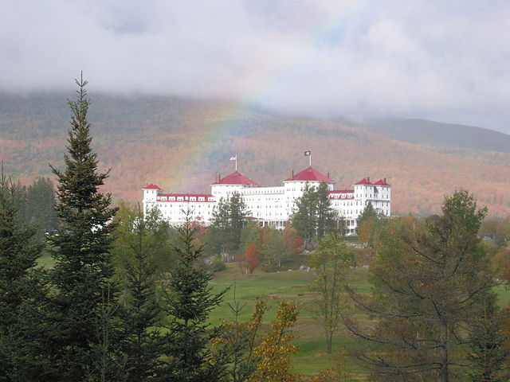

The Mount Washington Hotel is a resort that is very close to Mount Washington and is located in Bretton Woods, New Hampshire. Since, the mountain is so close to the resort it is the perfect place to stay if you do not want to drive far after your visit. The close proximity it shares with the mountain makes it the perfect stop for people arriving from out of state. This hotel has a lot of history behind it since it was a common retreat for presidents, poets, and celebrities. The resort utilizes the Bretton Wood so there is a plethora of activities for guests outside of exploring Mount Washington.
 Image Attribution: ShajiA at ml.wikipedia